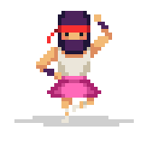

About Us

Jestesmy Nanonautami.
Mamy na imie Hania, Daria, Daniel i Adam.
Daniel - urodzony wokalista
Daniel jest wokalista Nanonautow. Spewa bez przerwy, nie tylko wtedy, gdy wystepuje z Nanonautami! Jego rodzice twierdza, ze nauczyl sie spiewac, zanim zaczal mowic!
Daniel gra tez na klarnecie i uczy sie gry na saksofonie altowym.
Adam - czlowiek-perkusja
Adam odziedziczyl zamilowanie do muzyki po rodzicach. Oboje graja na instrumentach i kupili mu pierwsza perkusje, gdy mial zaledwie piec lat, co doprowadzilo do licznych konfliktow z sasiadami. Podczas wykonywania niektorych utworow gra na gitarze basowej, a innych - na perkusji. Adam uwielbia grac z Nanonautami, ale nie cierpi transportowac perkusji...
Hania - jesli cos ma struny, to da sie na tym grac!

Gitara akustyczna? Prowadzaca gitara elektryczna? Ukulele? Harfa? Hania potrafi grac na nich wszystkich. Zaczela od domowej roboty gitar z tekturowych pudelek i gumek az wujowi zrobilo sie jej zal i na Gwiazdke kupil jej gitare hiszpanska. Po kilku lekcjach w szkole grala jak z nut!
Daria - mistrzyni klawiatury

Daria ma ukonczony IV stopien gry na fortepianie, ale potajemnie woli grac na klawiszach elektronicznych. Uwielbia brzmienie syntezatorow i przekomarza sie z Hania, ktora z nich powinna odpowiadac za partie basu.